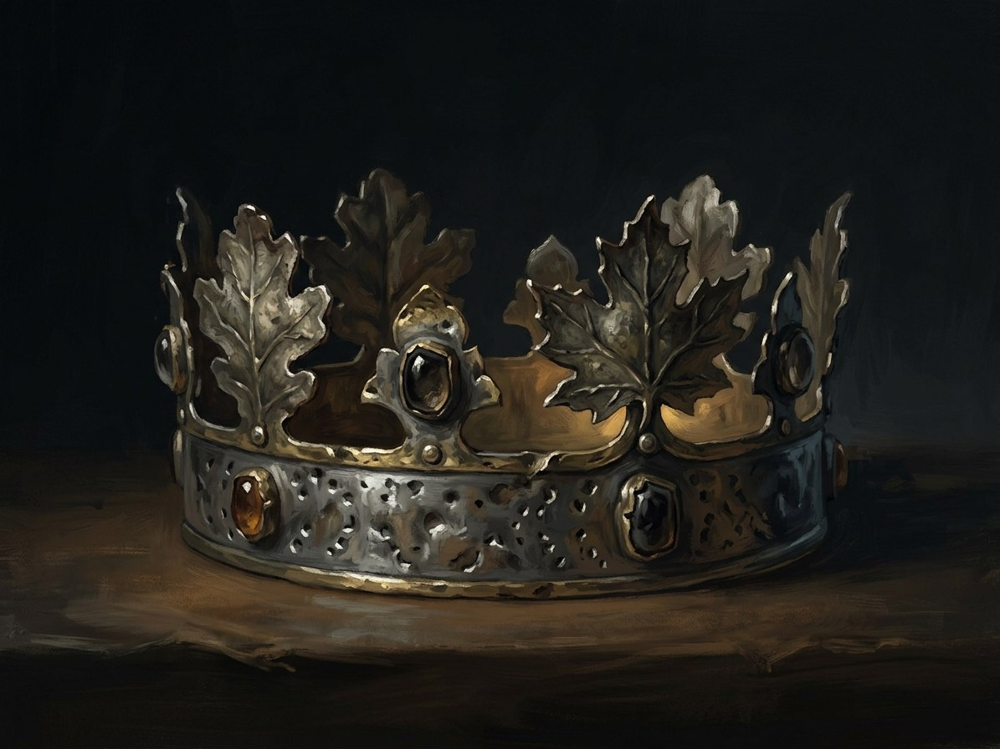

The Lutsk crown (turned to leaves)¶
Ryšiai
Caused by: Crown embassy blocked at the Polish border (Aug 1430); Vytautas refuses Henė
Created by: Šešėlių Pardavėjas / Henė
Held by: Šešėlių Pardavėjas / Henė (1430–1430) — Gold-painted chest, an illusion: the gold turns to leaves at Vytautas’s „no“.
Bearing Cannot be borne. It was never gold, and no man ever wore it
Holders None.
Power None, except as a lure. The instrument of Henė's last bargain at Vytautas's vault: the crown for the flame
Rule & cost Henė never lies; the word no turns the gold to leaves. The price of the refusal is the crown itself
Appearance. A gold crown in a gold-painted oak chest. When the chest is opened at the Noteć ford it holds dry leaves. The goldsmith's apprentice Pál (19) swears he held real gold.
Record. The Congress of Lutsk, Jan 1429, where Sigismund offered Vytautas a crown. The crown itself was never seized: the embassy was held at Frankfurt (Oder) and Sigismund's courtiers were robbed on the border before 19 Aug 1430.
The pledge. The offer comes with a pledge: Vytautas's word, not yet spoken. He refuses.
The zero. The Gold-Glutton writes a zero in its ledger.
Laima's sentence. A crown will travel toward him all his life and never arrive (Book VI ch. 12; legends §10).
Leaves. Vytautas postpones the coronation and dies uncrowned on 27 Oct 1430. On 1 Nov an old woman tells it as a tale: he died with a crown, only an invisible one.
The Lutsk crown (turned to leaves)

The Lutsk crown (turned to leaves) · artifact¶
Tipas |
artifact |
Years |
made 1430 |
Pastaba |
The royal crown sent by Sigismund for Vytautas’s coronation, turned to dry leaves. |
Description¶
Never a real crown. For the Saga it is a gold crown in a gold-painted oak chest, carried north from Buda in summer 1430. When the chest is opened at the Noteć ford it holds dry leaves. The goldsmith’s apprentice Pál (19) swears he held real gold (Book IV ch. 21, 23).
Power¶
None, except as a lure. It is the instrument of Henė’s last bargain at Vytautas’s vault: the crown for the flame (Book IV ch. 22). Vytautas refuses and the gold turns to leaves, as Henė puts it: „my most honest bargain, and I lost it“ (IV ch. 23).
Rule & cost¶
Henė never lies; the word „no“ simply turns the gold to leaves (IV ch. 30: „žodis atsakė ne ir auksas virto lapais“). The price of the refusal is the crown itself.
Origin¶
[Historical record] The crown plan comes from the Congress of Lutsk, Jan 1429, where Sigismund of Luxembourg offered Vytautas a royal crown. A coronation was set for 15 Aug 1430, then 8 Sep, then moved by Vytautas to 29 Sep. Sigismund’s courtiers Baptista Cigala and Sigismund Roth were robbed on the Neumark or Greater Poland border by Jan Czarnkowski’s guards before 19 Aug 1430, and the crown embassy waited at Frankfurt (Oder) and turned back. The crown was never seized: „crown seized“ is a later legend.
Arc across the books¶
15 Aug 1430. On the road in the chest (Book IV ch. 21); Henė makes his offer in the vault the same night (ch. 22).
Late Aug 1430. The chest is opened at the Noteć ford before Czarnkowski and Oleśnicki’s envoy Baltramiejus Rogala (ch. 23).
Oct 1430. Vytautas postpones the coronation, falls on the Trakai road and dies uncrowned (ch. 24-29).
1 Nov 1430. An old woman tells it as a tale: he died with a crown, „only an invisible one“ (ch. 30). Graph: Henė holds it in 1430 (the gold-painted chest, an illusion), until the „no“ turns it to leaves.
Sąsajos¶
graph LR
ev_crown_intercepted["Crown embassy blocked at the Polish border (Aug 1430); Vytautas refuses Henė"]
lutsk_crown["The Lutsk crown (turned to leaves)"]
shadow_seller["Šešėlių Pardavėjas / Henė"]
lutsk_crown -->|Created by| shadow_seller
ev_crown_intercepted -->|Causes| lutsk_crown
shadow_seller -->|Holds| lutsk_crown
style lutsk_crown stroke-width:3px